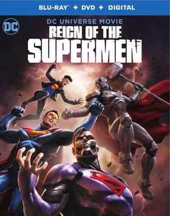

The genetics
Cloning is one of the film's main threads. Lex Luthor funds a LexCorp project in which Dr. Dabney Donovan creates Superboy, a clone of Superman, to pass him off as the returning hero for Luthor's own benefit; Luthor later reveals that the boy also carries his own DNA. The project has left failed clones, monstrous creatures that Luthor uses to kill Donovan when the scientist talks him out of destroying Superboy. Superboy himself is sympathetic, a manipulated teenager who finally finds a home with Superman's adoptive parents, while the cloning project serves Luthor's ambition. The Kryptonian Eradicator also restores Superman by rejuvenating his DNA. Cloning in the film yields a teenager with superpowers within months; real cloning would produce a baby that would have to grow up normally.
How genetics is portrayed
- Overall portrayal of genetics
- negative The film's genetic story is a corporate cloning scheme of Luthor's that ends with its scientist killed by his failed creations; sympathy for Superboy, a product of the science, does not make it look good, and the Eradicator's DNA repair is a secondary device.
- Outcome of the genetic intervention
- mixed Superboy becomes a sympathetic hero who finds a family and the Eradicator helps Superman revive, but the project produced monstrous failed clones that kill their creator and Superboy is used by Luthor.
- Lex Luthor
- villain Aim: power, commercial (negative). He funds the cloning project to present a LexCorp Superman, threatens to destroy Superboy and sets the failed clones on Donovan; though he later helps against Darkseid, the cloning story presents him as a manipulative villain.
- Dr. Dabney Donovan
- ambivalent Aim: curiosity (neutral). The LexCorp scientist creates Superboy and the monstrous failed clones, reveals the truth to Lois and talks Luthor out of destroying Superboy, then is killed by his own failed creations.
- The Eradicator
- neutral Aim: benevolent (positive). A Kryptonian program (affiliation other) that protects the reviving Superman by rejuvenating his DNA; it plays a protective but secondary role.
The story
Six months after Superman's death in his fight with Doomsday, four new figures appear claiming to be Superman: Superboy, Steel, Cyborg Superman and the Eradicator. Lex Luthor presents Superboy as the true Superman, and Lois Lane learns from Dr. Dabney Donovan, in a LexCorp laboratory, that he is a clone of Superman. Cyborg Superman wins public acclaim, especially after an attack by Parademons apparently kills the Justice League. Luthor tells Superboy that he is a clone of both Superman and Luthor himself and has Donovan killed by failed clones. Lois and Steel find that Cyborg Superman is Hank Henshaw, an astronaut who blames Superman for his wife's death and has created an army of citizens powered by alien technology. The Eradicator turns out to be a Kryptonian program protecting the real Superman as he revives. Darkseid is revealed to be controlling Henshaw, whom Superman destroys. Superboy, now called Conner, goes to live with the Kents.